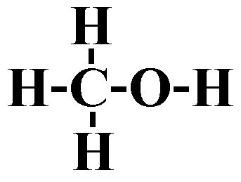
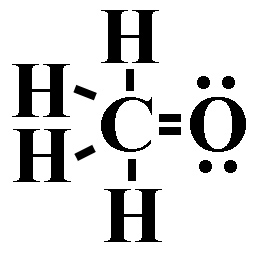
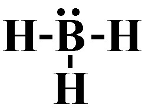

1) Which of the following shows the best Lewis structure for NOF?
A) *
B)
C)
D)
2) Which of the following shows the best Lewis structure for CH3OH?
A) 
B)
C) 
D) *
3) Identify the strongest bond.
A) Single covalent bond
B) Double covalent bond
C) All bonds are the same strength
D) Triple covalent bond*
Triple bonds are stronger than double bonds, which are stronger than single bonds.
4) A double covalent bond contains how many electrons?
A) 2
B) 6
C) 4*
D) 5
A single covalent bond contains 2 shared electrons. A double covalent bond contains 4 shared electrons. A triple covalent bond contains 6 shared electrons.
5) Place the following bonds in order of increasing dipole moment.
Si-P Si-Cl Si-S
A) Si-P < Si-S < Si-Cl*
B) Si-P < Si-Cl < Si-S
C) Si-Cl < Si-P < Si-S
D) Si-Cl < Si-S < Si-P
The bond with the lowest dipole moment will be the between elements closest on the periodic table. Since Si and P are the closest on the periodic table, they will have the lowest dipole moment. Since Si and S are the next closest, they will have the second to lowest dipole moment. Si and Cl are the furthest on the periodic table, so they will have the largest dipole moment.
6) Which of the following shows the best Lewis structure for BH3?
A)
B) 
C)
D) *
7) Which of the following shows the best Lewis structure for OCl2?
A)
B)
C) *
D)
Oxygen has 6 valence electrons and chlorine has 7 valence electrons. Both oxygen and chlorine must have an octet. is the only structure with the correct number of electrons (6 + 7 + 7 = 20), where both oxygen and chlorine have an octet.
8) Which compound has the largest ionic character in the gas phase?
A) Cl2
B) HF
C) LiF*
D) ClF
The compound with the largest ionic character will be the one with the largest dipole.
The largest dipole moment will be between the two elements that have the largest difference in electronegativity. Generally speaking the elements with the largest difference in electronegativity will be furthest on the periodic table. However, you should remember that hydrogen has an electronegativity that is around that of metalloids. In other words, it is low for a nonmetal.
9) Which of the following shows the best Lewis structure for N2H4?
A)
B)
C)
D) *
10) Which of the following shows the best Lewis structure for XeF2?
A)
B)
C)
D) *
Xe has 8 valence electrons and F has 7 valence electrons. Xe (being below the 2nd period) can get more than an octet, but F needs an octet. The formal charges need to be as close to zero as possible. is the only structure with the correct number of electrons (8 + 7 + 7 = 22) where the formal charges on all elements is zero.
11) Which of the following elements is the least electronegative.
A) Potassium*
B) Lithium
C) Bromine
D) Fluorine
The trend for electronegativity is that it increases as you go up and to the right on the periodic table. However, noble gasses have an electronegativity of approximately zero, so fluorine has the highest electronegativity. Thus in this case, potassium is the least electronegative.
12) Which of the following bonds is least polar?
A) H-I*
B) HCl
C) HBr
D) H-F
The least polar bond will be the one with the smallest dipole moment.
The smallest dipole moment will be between the two elements that have the smallest difference in electronegativity. Generally speaking the elements with the smallest difference in electronegativity will be closest on the periodic table. However, you should remember that hydrogen has an electronegativity that is around that of metalloids. In other words, it is low for a nonmetal.
 *
*


 *
* *
*

 *
*


 *
*


 *
*